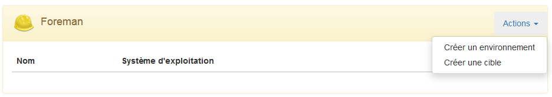
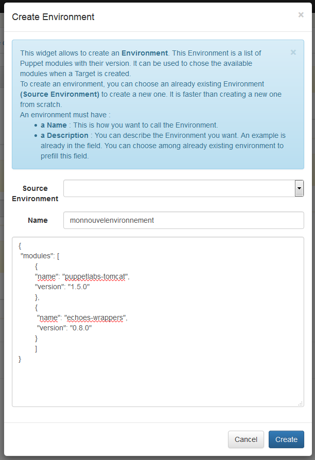
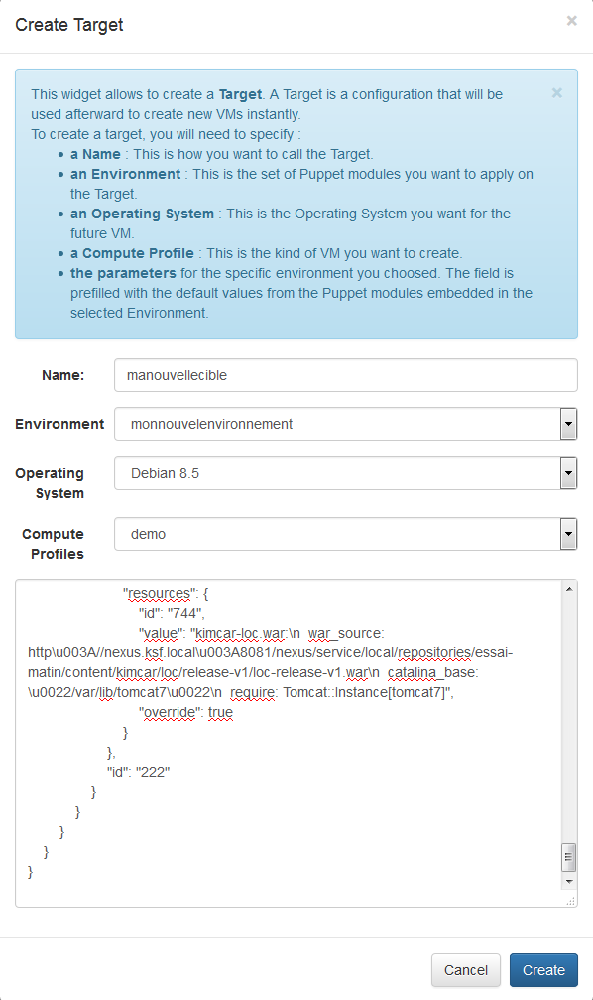
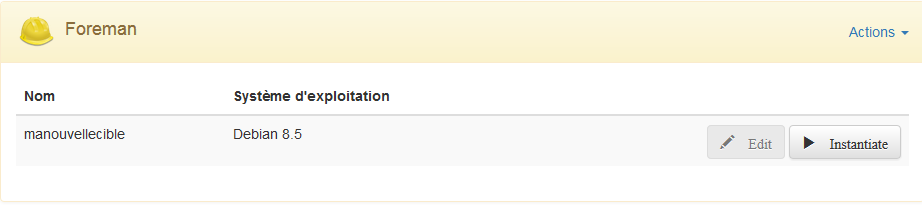
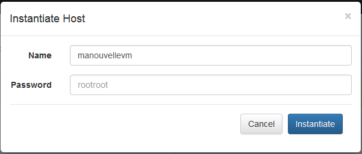
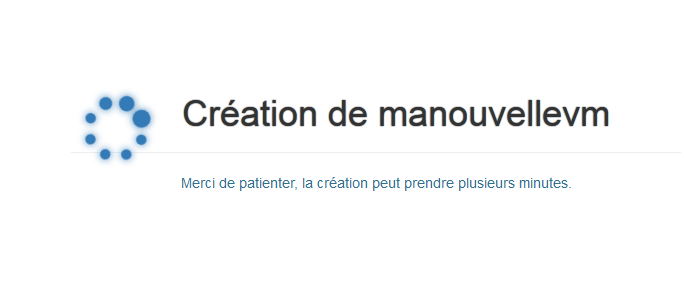
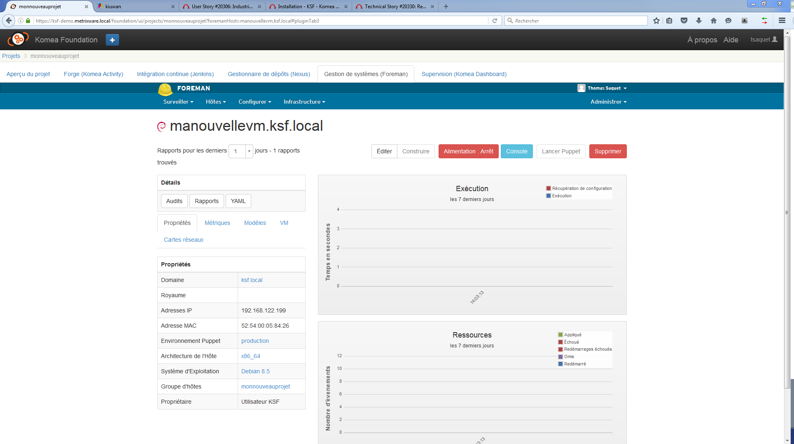

Ce chapitre explique comment, au sein d’un projet KSF, il est possible de créer des templates de VM et de les instancier en un temps record.
Il est nécessaire d’avoir bien compris l’architecture technique et fonctionnelle de KSF pour comprendre ce qui se passe lors de la création des VMs.
KSF repose sur l’hyperviseur KVM.
KSF utilise Foreman pour gérer le cycle de vie des machines. Foreman est utilisé à la fois pour gérer les machines de l’usine logicielle mais aussi les machines créées pour les besoins des projets.
Un environnement est à prendre au sens Puppet du terme. Il s’agit d’un ensemble de logiciels mis à disposition au même endroit sous forme de modules Puppet, pour un ensemble de noeuds (machines).
Une cible est la description d’une VM, tant d’un point de vue technique (nombre de coeurs, taille du disque, mémoire RAM) que d’un point de vue applicatif. D’un point de vue applicatif, c’est en fait la description de la configuration de l’ensemble des modules Puppet choisis parmi un environnement défini.
Pour créer un environnement, il faut se rendre dans l’onglet principal d’un projet. Il y a un widget dédié à Foreman qui dispose d’un bouton “Actions” en haut à droite. Pour créer un environnement, il faut cliquer sur ce bouton et choisir... “Créer un environnement”
S’ouvre ensuite un formulaire qu’il faut remplir. On peut choisir de prendre un autre environnement comme source afin de ne pas partir d’une page blanche.
| Etape | Description | Image |
|---|---|---|
| 1 | Dans le widget Foreman, on choisir “Créer un environnement” |  |
| 2 | S’ouvre alors un formulaire à remplir. |  |
Le format du fichier est le JSON. Pour connaître sa syntaxe exacte, je vous invite à consulter directement le site du standard JSON : http://json.org
Voici un exemple de fichier d’environnement :
{
"modules": [
{
"name": "puppetlabs-tomcat",
"version": "1.5.0"
},
{
"name": "echoes-wrappers",
"version": "0.8.0"
}
]
}
Ici, on décrit que l’on souhaite les modules Puppet suivants :
L’environnement sera créé en récupérant ces modules directement dans la Forge Puppet paramétrée dans l’usine. Soit en ligne, soit dans une forge locale qui aura alors la possibilité de contenir vos propres modules.
Pour créer une cible, il faut se rendre dans l’onglet principal d’un projet. Il y a un widget dédié à Foreman qui dispose d’un bouton “Actions” en haut à droite. Pour créer une cible, il faut cliquer sur ce bouton et choisir... “Créer une cible”
S’ouvre ensuite un formulaire qu’il faut remplir.
| Etape | Description | Image |
|---|---|---|
| 1 | Dans le widget Foreman, on choisir “Créer une cible” | |
| 2 | S’ouvre alors un formulaire à remplir. |  |
Le format du fichier est le JSON. Pour connaître sa syntaxe exacte, je vous invite à consulter directement le site du standard JSON : http://json.org
Voici un exemple de fichier de cible :
{
"modules": {
"tomcat": {
"id": "220",
"puppetClasses": {
"tomcat": {
"parameters": {
"manage_group": {
"id": "743",
"value": true,
"override": false
},
"purge_connectors": {
"id": "740",
"value": false,
"override": false
},
"catalina_home": {
"id": "736",
"value": "${$::tomcat::params::catalina_home}",
"override": false
},
"install_from_source": {
"id": "739",
"value": false,
"override": true
},
"user": {
"id": "737",
"value": "${$::tomcat::params::user}",
"override": false
},
"group": {
"id": "738",
"value": "${$::tomcat::params::group}",
"override": false
},
"manage_user": {
"id": "742",
"value": true,
"override": false
},
"purge_realms": {
"id": "741",
"value": false,
"override": false
}
},
"id": "220"
}
}
},
"wrappers": {
"id": null,
"puppetClasses": {
"wrappers::tomcat::service": {
"parameters": {
"defaults": {
"id": "784",
"value": {},
"override": false
},
"resources": {
"id": "306",
"value": "default:\n service_ensure: running\n service_name: tomcat7\n use_init: true\n require: Tomcat::Instance[tomcat7]",
"override": true
}
},
"id": "97"
},
"wrappers::tomcat::instance": {
"parameters": {
"defaults": {
"id": "783",
"value": {},
"override": false
},
"resources": {
"id": "307",
"value": "tomcat7:\n package_name: tomcat7\n install_from_source: false\n require: Class[tomcat]",
"override": true
}
},
"id": "98"
},
"wrappers::tomcat::war": {
"parameters": {
"defaults": {
"id": "785",
"value": {},
"override": false
},
"resources": {
"id": "744",
"value": "nom_du_logiciel.war:\n war_source: http\u003A//mon.serveur.nexus\u003A8081/nexus/service/local/repositories/mon_repo/content/mon_chemin/mon_war.war\n catalina_base: \u0022/var/lib/tomcat7\u0022\n require: Tomcat::Instance[tomcat7]",
"override": true
}
},
"id": "222"
}
}
}
}
}
C’est un peu impressionnant comme ça, mais vous allez voir, c’est en fait assez simple. Il s’agit en fait de la description de la configuration des deux modules que l’on a choisit de mettre dans l’environnement au chapitre précédent. Ce fichier est généré automatiquement à partir de la liste des modules disponibles, vous pouvez alors l’éditer pour :
Cette configuration est simple, seules les “values” pour lesquelles vous ne voulez pas la valeur par défaut sont à changer. C’est une opération qui correspond au paramétrage des modules Puppet dans chaque Hôte de Foreman.
Si cela vous semble compliqué, je vous invite à lire la documentation de Foreman à ce sujet.
Nous sommes à deux clics d’une VM fonctionnelle ! Nous disposons maintenant d’un environnement et d’une cible, il reste à instancier une VM.
| Etape | Description | Image |
|---|---|---|
| 1 | Dans le widget Foreman, on choisit le bouton de type “play” sur la ligne de la cible qui nous intéresse |  |
| 2 | S’ouvre alors un formulaire à remplir. |  |
| 3 | Il faut alors patienter quelques instants... |  |
| 4 | On se retrouve dans foreman, directement sur l’hôte nouvellement créé |  |
Une fois que c’est fait, on peut se logguer en SSH sur cette VM, depuis le sous réseau qui héberge les VMs créées il suffit donc de taper
ssh manouvellevm
Note
L’instanciation peut être répétée autant de fois qu’on le souhaite, une fois qu’une cible est créée on peut dupliquer la VM à volonté ! (Dans la mesure des capacités de l’hyperviseur bien entendu)
{kind=link}
{kind=link}
{kind=link}
{kind=link}
{kind=link}
{kind=link}
{kind=link}